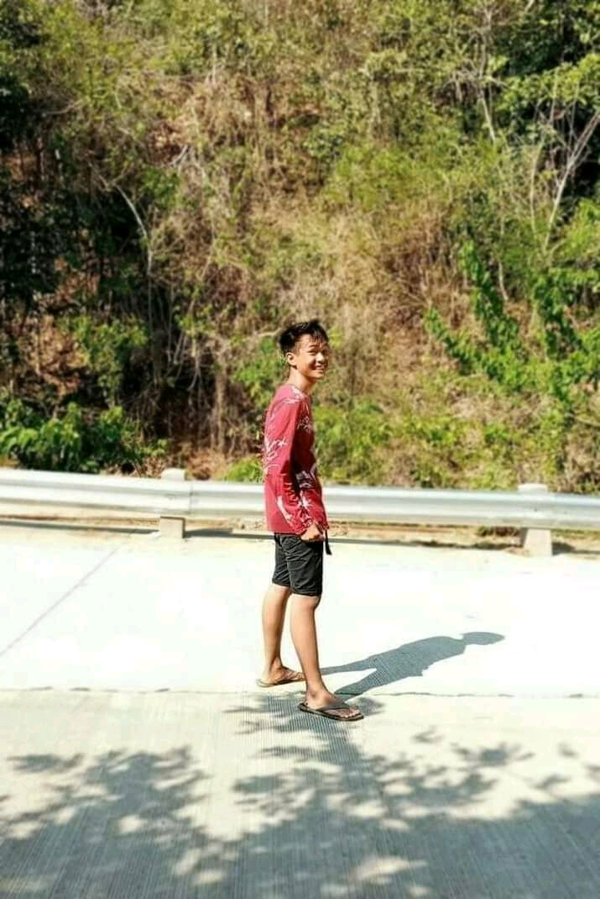

</html><!DOCTYPE html>
<html>
  <head>
      <header></header></header>
      
  <header style="background-color: #350; color: #fff; padding: 20px; text-align: center;">
  
 
  
</header>
<html>
  <head>
    <style>
      .back-container {
        position: absolute;
        top: 20px;
        left: 20px;
      }
  
      .arrow-back {
        border: solid rgb(255, 255, 255);
        border-width: 0 2px 2px 0;
        display: inline-block;
        padding: 5px;
        transform: rotate(135deg);
      }
    </style>
  </head>
  <body>
    <div class="back-container">
        <a href="../index.html"><i class="arrow-back"></i></a>
      </button>
    </div>
  </body>
</html>


 
</header>

    <meta charset="UTF-8">
    <title>My Personal Website</title>
    <style>
     
      body {
        font-family: Arial, sans-serif;
        margin: 0;
        padding: 0;
      }
      header {
        background-color: #350;
        color: #fff;
        padding: 20px;
        text-align: center;
      }
      header h1 {
        margin: 0;
      }
      section {
        padding: 20px;
      }
      section h2 {
        margin: 0;
        padding-bottom: 10px;
      }
    </style>
  <!DOCTYPE html>
<html>
  <head>
    <meta charset="UTF-8">
    <title>My Personal Website</title>
    <style>
      body {
        font-family: Verdana, sans-serif;
        margin: 0;
        padding: 0;
      }
      header {
        background-color: #350#120b00;
        color: #fff;
        padding: 20px;
        text-align: center;
      }
      header h1 {
        margin: 0;
      }
      section.box {
        animation: slide-in 0.5s ease-out;
        background-color: #eee;
        border: 1px solid #333;
        padding: 20px;
        width: 75%;
        margin: 0 auto;
        text-align: center;
      }
      section.box h2 {
        margin: 0;
        padding-bottom: 10px;
      }
      @keyframes slide-in {
        from {
          transform: translateX(-100%);
        }
        to {
          transform: translateX(0);
        }
      }
    </style>
  </head>
  <body>
    <header>
      <h1>Eduardo A. Valdez Jr</h1
      >
     <head> <style> table { width: 40%; margin: 50 auto; border-collapse: collapse; text-align: left; } th, td { border: 1px solid #dddddd; padding: 8px; } th { background-color: #dddddd; } </style> </head> <body> <table> <tr> <th>Student ID:</th> <td>22-AS-1596</td> </tr> <tr> <th>Course & Block ID:</th> <td>BSIT 1A</td> </tr> <tr> <th>Email:</th> <td>22as1596_ms.psu.edu</td> </tr> <tr> <th>Phone Number:</th> <td>09519517842</td> </tr> </table> </body>
    </header>    

    <section
     class="box">
      <h1>About Me</h1>
      
      <p>
        Hi, I'm Eduardo Valdez Jr. I'm a first-year college student at PSU Asingan pursuing a Bachelor of Science in Information Technology. I'm 20 years old and I live in Brgy Canarem, Natividad, Pangasinan. I enjoy watching anime and playing online games such as CODM and ML because it removes the stress and give me relaxation and I take the BSIT course became We see now in modern generation more job opportunities for computer related job and being a college student is a hard because of my dreams I won't give up 
      </p>
    </section>
  </body>
</html>
  <section
     class="box">
      <h2> Goals:</h2>
      
      <p>
        
       As a first year college student, I am constantly seeking opportunities to grow and challenge myself. I believe that continuous learning is key to success and personal fulfillment, and I strive to adopt the same mindset as the instructors who taught themselves to code and had a successful career in IT. I hope to develop my skills and knowledge through my coursework, extracurricular activities, and internships. I am particularly interested in expanding my technical skills, and I believe that programming will play a big role in my future. I also aim to be an avid reader, just like the teacher, in order to stay informed and knowledgeable about the latest advancements in my field. Overall, I am committed to becoming a lifelong learner and continuously improving myself.
      </p>
    </section>
  </body>
</html>

<p>   ☎️ for more info contact me in my social media accounts</p>
<footer style="background-color: #350; color: #fff; text-align: left; padding: 20px;">
  <a href="https://www.facebook.com/evaldez154   " target="_blank" style="display: inline-block; margin-right: 10px;">
    
  </a>
  <a href=" https://instagram.com/wrdz10?igshid=NTA5ZTk1NTc=" target="_blank" style="display: inline-block; margin-right: 10px;">
    
